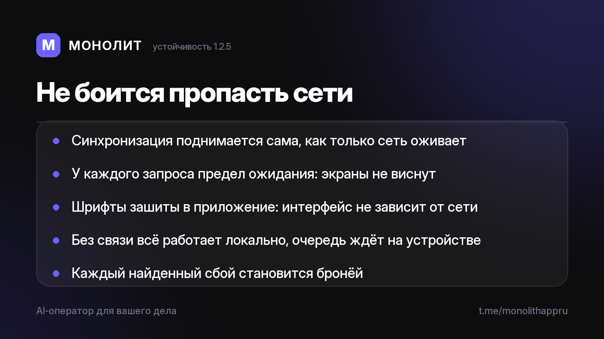

Дневник разработки · 04.07.2026
МОНОЛИТ 1.2.5 Beta — приложению больше не нужен идеальный интернет

Ночью тестовый телефон устроил идеальный краш-тест: Wi-Fi горит, а интернета нет. Так мы нашли слабые места онлайн-части — и к утру закрыли их намертво.
🛰 Синхронизация поднимается сама. Как только сеть оживает, всё накопленное уезжает в облако без единого тапа: приложение пробует снова и снова — тихо, в фоне, по нарастающей.
⏱ Зависших колёсиков больше нет. У каждого сетевого запроса есть предел ожидания — ни один сбой сети не подвешивает экран.
🔤 Шрифты зашиты внутрь приложения. Интерфейс выглядит одинаково с интернетом и без — раньше без сети он тихо подменялся системным.
🔒 Как и раньше: без сети всё работает локально и ничего не теряется — очередь изменений живёт на устройстве и ждёт связи.
Бета закаляется на живых ударах: каждый найденный сбой становится бронёй. Хотите тестировать на Android? Напишите @sbphotoshoter — пришлю APK.
МОНОЛИТ — учёт заказов, клиентов и денег одной фразой. Windows и Android, бесплатная бета.
Скачать Читать канал